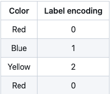

Document Computer Project
Star classification
Data
- Temperature (K): Temperature of star
- L -- L/Lo: Solar luminosity Lo = 3.828 x 10^26 Watts
- R -- R/Ro: Ro = 6.9551 x 10^8 m
- AM -- Mv: Absolute magnitude
- Color -- General Color of Spectrum
- Spectral_Class -- O,B,A,F,G,K,M / SMASS: An asteroid spectral type is assigned to asteroids based on their emission spectrum, color, and sometimes albedo


Processing data
In machine learning, we usually deal with datasets that contain multiple labels in one or more than one columns. These labels can be in the form of words or numbers. To make the data understandable or in human-readable form, the training data is often labelled in words. Label Encoding refers to converting the labels into a numeric form so as to convert them into the machine-readable form. Machine learning algorithms can then decide in a better way how those labels must be operated. It is an important pre-processing step for the structured dataset in supervised learning.
Example:
Linear Discriminant Analysis or Normal Discriminant Analysis or Discriminant Function Analysis is a dimensionality reduction technique that is commonly used for supervised classification problems. It is used for modelling differences in groups i.e. separating two or more classes. It is used to project the features in higher dimension space into a lower dimension space. For example, we have two classes and we need to separate them efficiently. Classes can have multiple features. Using only a single feature to classify them may result in some overlapping as shown in the below figure. So, we will keep on increasing the number of features for proper classification.


Train model
Multinomial logistic regression is used to predict categorical placement in or the probability of category membership on a dependent variable based on multiple independent variables. The independent variables can be either dichotomous (i.e., binary) or continuous (i.e., interval or ratio in scale). Multinomial logistic regression is a simple extension of binary logistic regression that allows for more than two categories of the dependent or outcome variable. Like binary logistic regression, multinomial logistic regression uses maximum likelihood estimation to evaluate the probability of categorical membership.

Evalute model